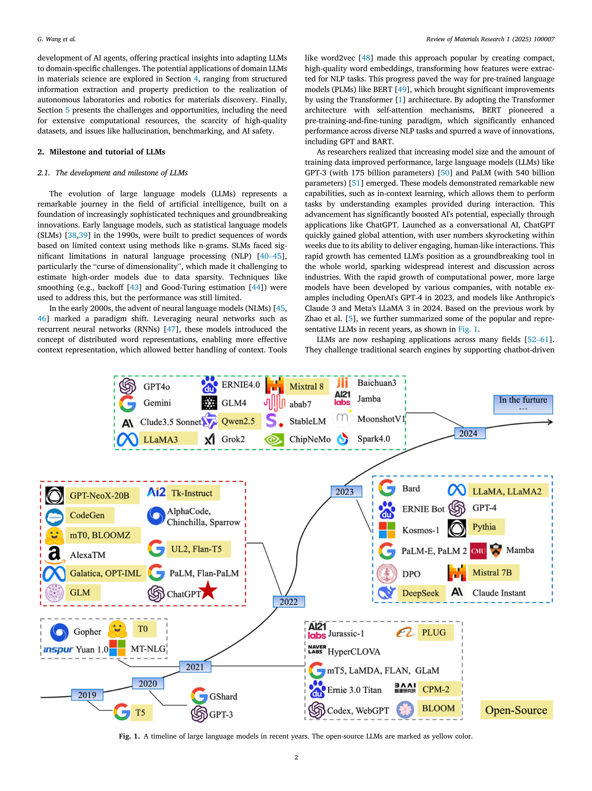

Figure 1
재료과학에 특화된 도메인 지식 기반 LLM을 구축하기 위한 방법론(파인튜닝, RAG, 프롬프트 엔지니어링, AI 에이전트)과 응용(정보 추출, 물성 예측, 자율 실험실, 로보틱스)을 체계적으로 리뷰한 논문이다.
ChatGPT의 등장 이후 LLM이 과학 연구의 패러다임을 데이터 기반에서 AI 기반으로 전환시키고 있다. 그러나 범용 LLM은 재료과학의 전문 지식(결정 구조, 상태도, 합성 조건 등)을 충분히 반영하지 못하며, 도메인 특화 LLM 개발에는 여전히 과제가 남아 있다. 이 리뷰는 재료과학 도메인 지식을 LLM에 효과적으로 통합하는 방법론적 가이드라인을 제공하고자 한다.
종합 리뷰 논문으로서 다음의 구조를 따른다:
재료과학 연구자가 LLM을 자신의 연구에 도입하고자 할 때 실질적인 로드맵을 제공하는 유용한 리뷰다. 특히 4가지 도메인 적응 전략을 체계적으로 정리한 점은 실무적 가치가 높다. 다만 리뷰 논문의 한계로 자체 실험적 검증이 부재하며, 각 전략 간의 정량적 비교가 없어 연구자가 최적의 접근법을 선택하는 데는 추가 조사가 필요하다. 자율 실험실과 로보틱스까지 범위를 넓힌 것은 LLM의 미래 가능성을 보여주지만, 현재 기술 성숙도를 감안하면 아직 초기 단계의 비전에 가깝다. 전반적으로 재료과학 LLM 연구의 전체 그림을 파악하는 데 적합한 입문용 리뷰로 평가된다.
| 항목 | 점수 (1-5) |
|---|---|
| Novelty | 2 |
| Technical Soundness | 3 |
| Significance | 3 |
| Overall | 2.7 |
총평: 지식 그래프 기반 LLM으로 재료 문헌을 리뷰하는 접근은 유용하나 방법론적 깊이와 검증 범위에서 한계를 보인다.